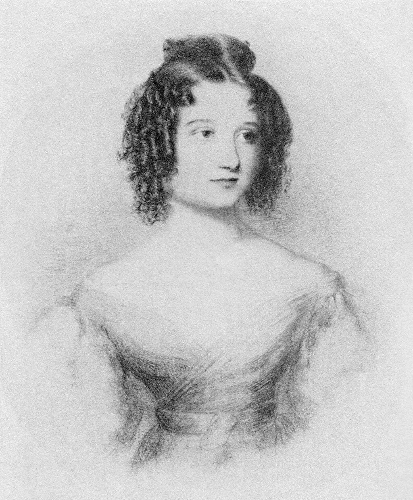

<!DOCTYPE html>
<html lang="pt-BR" class="dark-theme">

</html>

<head>
    <meta charset="UTF-8">
    <meta http-equiv="X-UA-Compatible" content="IE=edge">
    <meta name="viewport" content="width=device-width, initial-scale=1.0">
    <meta name="author" content="Annie Alves">
    <meta name="description"
        content="Site desenvolvido como Projeto Final do Potência Feminina: Mias mulheres ewm Tech, da WoMakers Code">

    <link rel="shortcut icon" type="image/png" href="./src/img/ada-icon.png">
    <link rel="preconnect" href="https://fonts.googleapis.com">
    <link rel="preconnect" href="https://fonts.gstatic.com" crossorigin>
    <link href="https://fonts.googleapis.com/css2?family=Lato&family=PT+Serif&display=swap" rel="stylesheet">
    <link href="https://fonts.googleapis.com/css2?family=Arvo&display=swap" rel="stylesheet">

    <link rel="stylesheet" href="./src/css/reset.css">
    <link rel="stylesheet" href="./src/css/style.css">
    <link rel="stylesheet" href="./src/css/responsive.css">

    <title>Ada Lovelace</title>


</head>

<body>

    <header class="header">
        
        <nav>
            <ul>
                <li>
                    <a class="nav-link" href="index.html">
                        Biografia
                    </a>
                </li>
                <li>
                    <a class="nav-link" href="galeria.html">
                        Galeria
                    </a>
                </li>
            </ul>
        </nav>
        <div>
            <div id="toggle">
                <i class="indicator">

                </i>
                <svg version="1.1" class="svg sun" xmlns="http://www.w3.org/2000/svg"
                    xmlns:xlink="http://www.w3.org/1999/xlink" x="0px" y="0px" viewBox="0 0 496 496"
                    style="enable-background:new 0 0 496 496;" xml:space="preserve">

                    <rect x="152.994" y="58.921" transform="matrix(0.3827 0.9239 -0.9239 0.3827 168.6176 -118.5145)"
                        width="40.001" height="16" />
                    <rect x="46.9" y="164.979" transform="matrix(0.9239 0.3827 -0.3827 0.9239 71.29 -12.4346)"
                        width="40.001" height="16" />
                    <rect x="46.947" y="315.048" transform="matrix(0.9239 -0.3827 0.3827 0.9239 -118.531 50.2116)"
                        width="40.001" height="16" />

                    <rect x="164.966" y="409.112" transform="matrix(-0.9238 -0.3828 0.3828 -0.9238 168.4872 891.7491)"
                        width="16" height="39.999" />

                    <rect x="303.031" y="421.036" transform="matrix(-0.3827 -0.9239 0.9239 -0.3827 50.2758 891.6655)"
                        width="40.001" height="16" />

                    <rect x="409.088" y="315.018" transform="matrix(-0.9239 -0.3827 0.3827 -0.9239 701.898 785.6559)"
                        width="40.001" height="16" />

                    <rect x="409.054" y="165.011" transform="matrix(-0.9239 0.3827 -0.3827 -0.9239 891.6585 168.6574)"
                        width="40.001" height="16" />
                    <rect x="315.001" y="46.895" transform="matrix(0.9238 0.3828 -0.3828 0.9238 50.212 -118.5529)"
                        width="16" height="39.999" />
                    <path d="M248,88c-88.224,0-160,71.776-160,160s71.776,160,160,160s160-71.776,160-160S336.224,88,248,88z M248,392
				c-79.4,0-144-64.6-144-144s64.6-144,144-144s144,64.6,144,144S327.4,392,248,392z" />
                    <rect x="240" width="16" height="72" />
                    <rect x="62.097" y="90.096" transform="matrix(0.7071 0.7071 -0.7071 0.7071 98.0963 -40.6334)"
                        width="71.999" height="16" />
                    <rect y="240" width="72" height="16" />

                    <rect x="90.091" y="361.915" transform="matrix(-0.7071 -0.7071 0.7071 -0.7071 -113.9157 748.643)"
                        width="16" height="71.999" />
                    <rect x="240" y="424" width="16" height="72" />

                    <rect x="361.881" y="389.915" transform="matrix(-0.7071 -0.7071 0.7071 -0.7071 397.8562 960.6281)"
                        width="71.999" height="16" />
                    <rect x="424" y="240" width="72" height="16" />
                    <rect x="389.911" y="62.091" transform="matrix(0.7071 0.7071 -0.7071 0.7071 185.9067 -252.6357)"
                        width="16" height="71.999" />
                </svg>
                <svg version="1.1" class="svg moon" xmlns="http://www.w3.org/2000/svg"
                    xmlns:xlink="http://www.w3.org/1999/xlink" x="0px" y="0px" viewBox="0 0 49.739 49.739"
                    style="enable-background:new 0 0 49.739 49.739;" xml:space="preserve">
                    <path d="M25.068,48.889c-9.173,0-18.017-5.06-22.396-13.804C-3.373,23.008,1.164,8.467,13.003,1.979l2.061-1.129l-0.615,2.268
       c-1.479,5.459-0.899,11.25,1.633,16.306c2.75,5.493,7.476,9.587,13.305,11.526c5.831,1.939,12.065,1.492,17.559-1.258v0
       c0.25-0.125,0.492-0.258,0.734-0.391l2.061-1.13l-0.585,2.252c-1.863,6.873-6.577,12.639-12.933,15.822
       C32.639,48.039,28.825,48.888,25.068,48.889z M12.002,4.936c-9.413,6.428-12.756,18.837-7.54,29.253
       c5.678,11.34,19.522,15.945,30.864,10.268c5.154-2.582,9.136-7.012,11.181-12.357c-5.632,2.427-11.882,2.702-17.752,0.748
       c-6.337-2.108-11.473-6.557-14.463-12.528C11.899,15.541,11.11,10.16,12.002,4.936z" />
                </svg>
                </label>
            </div>

        </div>
    </header>


    <div class="conteudo">
        <div class="img-container">
            <div class="image active">
                
                <p class="img-desc"> Retrato em aquarela de Ada Lovelace, possivelmente pintado por Alfred Edward Chalon</p>
            </div>


            <div class="image">
                
                <p class="img-desc"> Retrato de Ada Lovelace aos 7 anos</p>
            </div>

            <div class="image">
                
                <p class="img-desc"> Ada Lovelace aos 17 anos</p>
            </div>


            <div class="image">
                
                <p class="img-desc"> Retrato de Ada, pintado em 1836 por Margaret Sarah Carpenter </p>
            </div>


            <div class="image">
                
                <p class="img-desc">  Daguerreótipo, tirada por Antoine Claudet em 1843 </p>
            </div>

            <div class="image">
                
                <p class="img-desc">  Diagrama da "nota G", primeiro algoritmo de computador </p>
            </div>


            <div class="image">
                
                <p class="img-desc">  Representação gráfica da Máquina Analítica, de Charles Babbage</p>
            </div>      

        </div>        

    

        <div class="btn-container">
            <button class="botao-info ativo"></button>
            <button class="botao-info"></button>
            <button class="botao-info"></button>
            <button class="botao-info"></button>
            <button class="botao-info"></button>
            <button class="botao-info"></button>
            <button class="botao-info"></button>
        </div>

    </div>


    <footer class="footer">
        <div class="footer-container">
            <section class="about">
                <h4 class="title sobre">
                    Sobre
                </h4>
                <p class="info-site">
                    Site desenvolvido como projeto final do curso Mais Mulheres em Tech, da WoMakers Code. O objetivo
                    seria
                    criar um site sobre uma mulher importante na tecnologia. Minha escolha foi Ada Lovelace, pois é a
                    primeira programadora da história, sendo uma grande inspiração.
                </p>
            </section>

            <div class="social">
                <h4 class="title sobre">
                    Minhas redes sociais
                    <div class="icones-container">
                        <a class="link" aria-label="GitHub" target="blank" href="https://github.com/AnnieAlves/">
                            <svg xmlns="http://www.w3.org/2000/svg" width="50" height="50" viewBox="0 0 24 24">
                                <path fill="currentColor"
                                    d="M12 0c-6.626 0-12 5.373-12 12 0 5.302 3.438 9.8 8.207 11.387.599.111.793-.261.793-.577v-2.234c-3.338.726-4.033-1.416-4.033-1.416-.546-1.387-1.333-1.756-1.333-1.756-1.089-.745.083-.729.083-.729 1.205.084 1.839 1.237 1.839 1.237 1.07 1.834 2.807 1.304 3.492.997.107-.775.418-1.305.762-1.604-2.665-.305-5.467-1.334-5.467-5.931 0-1.311.469-2.381 1.236-3.221-.124-.303-.535-1.524.117-3.176 0 0 1.008-.322 3.301 1.23.957-.266 1.983-.399 3.003-.404 1.02.005 2.047.138 3.006.404 2.291-1.552 3.297-1.23 3.297-1.23.653 1.653.242 2.874.118 3.176.77.84 1.235 1.911 1.235 3.221 0 4.609-2.807 5.624-5.479 5.921.43.372.823 1.102.823 2.222v3.293c0 .319.192.694.801.576 4.765-1.589 8.199-6.086 8.199-11.386 0-6.627-5.373-12-12-12z" />
                            </svg>
                        </a>
                        <a class="link" aria-label="LinkedIn" target="blank"
                            href="https://www.linkedin.com/in/annie-alves/">
                            <svg xmlns="http://www.w3.org/2000/svg" width="50" height="50" viewBox="0 0 24 24">
                                <path fill="currentColor"
                                    d="M19 0h-14c-2.761 0-5 2.239-5 5v14c0 2.761 2.239 5 5 5h14c2.762 0 5-2.239 5-5v-14c0-2.761-2.238-5-5-5zm-11 19h-3v-11h3v11zm-1.5-12.268c-.966 0-1.75-.79-1.75-1.764s.784-1.764 1.75-1.764 1.75.79 1.75 1.764-.783 1.764-1.75 1.764zm13.5 12.268h-3v-5.604c0-3.368-4-3.113-4 0v5.604h-3v-11h3v1.765c1.396-2.586 7-2.777 7 2.476v6.759z" />
                            </svg>
                        </a>
                        <a class="link" aria-label="Itch.io" target="blank" href="https://firebenderannie.itch.io">
                            <svg xmlns="http://www.w3.org/2000/svg" height="50" viewBox="0 0 245.371 220.736">
                                <path fill="currentColor"
                                    d="M31.99 1.365C21.287 7.72.2 31.945 0 38.298v10.516C0 62.144 12.46 73.86 23.773 73.86c13.584 0 24.902-11.258 24.903-24.62 0 13.362 10.93 24.62 24.515 24.62 13.586 0 24.165-11.258 24.165-24.62 0 13.362 11.622 24.62 25.207 24.62h.246c13.586 0 25.208-11.258 25.208-24.62 0 13.362 10.58 24.62 24.164 24.62 13.585 0 24.515-11.258 24.515-24.62 0 13.362 11.32 24.62 24.903 24.62 11.313 0 23.773-11.714 23.773-25.046V38.298c-.2-6.354-21.287-30.58-31.988-36.933C180.118.197 157.056-.005 122.685 0c-34.37.003-81.228.54-90.697 1.365zm65.194 66.217a28.025 28.025 0 0 1-4.78 6.155c-5.128 5.014-12.157 8.122-19.906 8.122a28.482 28.482 0 0 1-19.948-8.126c-1.858-1.82-3.27-3.766-4.563-6.032l-.006.004c-1.292 2.27-3.092 4.215-4.954 6.037a28.5 28.5 0 0 1-19.948 8.12c-.934 0-1.906-.258-2.692-.528-1.092 11.372-1.553 22.24-1.716 30.164l-.002.045c-.02 4.024-.04 7.333-.06 11.93.21 23.86-2.363 77.334 10.52 90.473 19.964 4.655 56.7 6.775 93.555 6.788h.006c36.854-.013 73.59-2.133 93.554-6.788 12.883-13.14 10.31-66.614 10.52-90.474-.022-4.596-.04-7.905-.06-11.93l-.003-.045c-.162-7.926-.623-18.793-1.715-30.165-.786.27-1.757.528-2.692.528a28.5 28.5 0 0 1-19.948-8.12c-1.862-1.822-3.662-3.766-4.955-6.037l-.006-.004c-1.294 2.266-2.705 4.213-4.563 6.032a28.48 28.48 0 0 1-19.947 8.125c-7.748 0-14.778-3.11-19.906-8.123a28.025 28.025 0 0 1-4.78-6.155 27.99 27.99 0 0 1-4.736 6.155 28.49 28.49 0 0 1-19.95 8.124c-.27 0-.54-.012-.81-.02h-.007c-.27.008-.54.02-.813.02a28.49 28.49 0 0 1-19.95-8.123 27.992 27.992 0 0 1-4.736-6.155zm-20.486 26.49l-.002.01h.015c8.113.017 15.32 0 24.25 9.746 7.028-.737 14.372-1.105 21.722-1.094h.006c7.35-.01 14.694.357 21.723 1.094 8.93-9.747 16.137-9.73 24.25-9.746h.014l-.002-.01c3.833 0 19.166 0 29.85 30.007L210 165.244c8.504 30.624-2.723 31.373-16.727 31.4-20.768-.773-32.267-15.855-32.267-30.935-11.496 1.884-24.907 2.826-38.318 2.827h-.006c-13.412 0-26.823-.943-38.318-2.827 0 15.08-11.5 30.162-32.267 30.935-14.004-.027-25.23-.775-16.726-31.4L46.85 124.08C57.534 94.073 72.867 94.073 76.7 94.073zm45.985 23.582v.006c-.02.02-21.863 20.08-25.79 27.215l14.304-.573v12.474c0 .584 5.74.346 11.486.08h.006c5.744.266 11.485.504 11.485-.08v-12.474l14.304.573c-3.928-7.135-25.79-27.215-25.79-27.215v-.006l-.003.002z" />
                            </svg>
                        </a>
                    </div>
                </h4>

            </div>
        </div>
        <div class="credit"><p class="credit-text"> Feito por Annie: <em>"Apenas uma dev de passagem"</em></p></div>
       


    </footer>
    <script src="./src/js/index.js"></script>
    <script src="./src/js/galeria.js"></script>

</body>


</html>